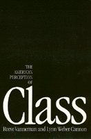

<body bgcolor="#FFFFFF" text="#000000" link="#0000FF" vlink="#CC0000" alink="#CC0000"><center><hr width="350" size="1" align="center" noshade>This provocative book presents a new vision of the American working class<hr width="350" size="1" align="center" noshade><p><a href="https://cdcshoppingcart.uchicago.edu/Cart/ChicagoBook.aspx?ISBN=9780877224365&&PRESS=temple" target="_top">Buy this book!</a> | <a href="https://cdcshoppingcart.uchicago.edu/Cart/Cart.aspx?PRESS=temple" target="_top">View Cart</a> | <a href="https://cdcshoppingcart.uchicago.edu/Cart/Cart.aspx?PRESS=temple" target="_top">Check Out</a></p><p></p></center><!--none//--><h1>The American Perception of Class</h1>
<h3>Reeve Vanneman and Lynn Weber Cannon</h3>
<P>cloth 0-87722-436-6 $34.95, Jun 87, <FONT COLOR=#990033>Out of Print</FONT>
<br>paper 0-87722-593-1 $23.95, <FONT COLOR=#990033>Out of Stock Unavailable</FONT>
<BR> 384 pp
6x9
28&nbsp;figures
</P><BLOCKQUOTE><I>"[P]resents an extremely interesting and important theoretical argument which speaks to many issues in political science and sociology.... The book challenges conventional wisdom about the relations between empirical evidence and academic interpretations of that evidence...."</I>
<br>&#151<b>Jennifer Hochschild</b><I></I></BLOCKQUOTE>
<p>Scholars and nonacademics alike have usually assumed that the American working class does not think of itself as a coherent class opposed to the dominant powers in American society&#151in short, that it is not class conscious. In international perspective, the American working class appears docile and complacent. It has never supported a strong socialist movement; a weak union movement has limited itself to simple wage demands; and class conflict here has rarely threatened to explode into a social revolution. Both radicals and mainstream scholars have explained this American exceptionalism by the conservative psychology of the American worker.
<p>This provocative book presents a new vision of the American working class. <I>The American Perception of Class</I> offers a radically new interpretation of American class conflict and criticizes earlier analyses for psychologizing the problem and "blaming the victims" for their subordination. It marshals a great variety of evidence, primarily from national surveys, to demonstrate that, contrary to what almost everybody has assumed, American workers are indeed class conscious. They have not been so beguiled by images of a classless society that they can no longer recognize the divide that separates them from their middle class and corporate bosses; nor have they been swallowed up by an affluent middle class; and they have not been so divided by racial and ethnic loyalties, or gender specific interests that they have forgotten their common class position.
<p>Finally, the book suggests a new approach to class conflict in America&#151one not based on the psychology of the American worker but on the strength of American business and its capacity to overwhelm or redirect any challenge from below. No other working class has faced such a formidable opponent.
<BR>&nbsp;<h2>Reviews</h2>
<p><I>"In a careful and thorough manner, Vanneman and Cannon have reconsidered the perplexing question first posed in 1906 by Werner Sombart’s <I>Why Is There No Socialism in the United States?</I> After meticulously reviewing and challenging mainstream explanations and research on the ‘exceptional’ lack of class consciousness within the American working class, the authors conclude that American workers have been misread and are remarkably accurate in their perceptions of classes and class relations.... Using the best available data and most sophisticated theory and analysis, Vanneman and Cannon add life to what many believe to be a tired and defeated issue in neo-Marxist literature, and clearly demonstrate the power of structural analysis over psychological reductionism. The book is stylish, well ordered, and well written."</I>
<br>&#151<b><I>Choice</I></b>
<BR>&nbsp;<H2>About the Author(s)</H2>
<P><b>Reeve Vanneman</b> is Associate Professor of Sociology at the University of Maryland at College Park.</P>
<P><b>Lynn Weber Cannon</b> is Associate Director for the Center for Research on Women and Professor of Sociology at Memphis State University.</P>
<BR><H2>Subject Categories</H2>
<p><A HREF="/tempress/sociology.html" TARGET="_top">Sociology</a>
<BR><A HREF="/tempress/political.html" TARGET="_top">Political Science and Public Policy</a>
<BR><A HREF="/tempress/general.html" TARGET="_top">General Interest</a>
</p>
<p align="center"><a href="https://cdcshoppingcart.uchicago.edu/Cart/ChicagoBook.aspx?ISBN=9780877224365&&PRESS=temple" target="_top">Buy this book!</a> | <a href="https://cdcshoppingcart.uchicago.edu/Cart/Cart.aspx?PRESS=temple" target="_top">View Cart</a> | <a href="https://cdcshoppingcart.uchicago.edu/Cart/Cart.aspx?PRESS=temple" target="_top">Check Out</a></p><p><font face="Arial" size="1"><a href="copyright.html" onMouseOver="window.status='Web Copyright Policy';return true;" onMouseOut="window.status=''" title="Web Copyright Policy">&copy;</a> 2015 <a href="http://www.temple.edu" target="new" onMouseOver="window.status='Link to Temple University home page';return true;" onMouseOut="window.status=''" title="Link to Temple University home page">Temple University</a>. All Rights Reserved. http://www.temple.edu/tempress/titles/427_reg.html</font></p>